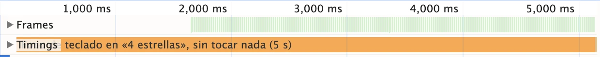

Por qué el HTML semántico es clave para el rendimiento web
Joan León · A11y Conf 2026
Notas
Hola a todas y a todos. Soy Joan León y esta charla va de un árbol que casi nadie ve, pero que usan cada día millones de personas: el árbol de accesibilidad.
Vamos a ver por qué es frágil, qué lo rompe, y por qué cuidarlo hace que la web sea a la vez más accesible y más rápida.
D muestra todas las diapositivas en una sola página.
G cambia entre la vista visual y la de texto.
H oculta la barra de controles para dejar más espacio.
T cambia entre el tema claro y el oscuro.
L cambia de idioma: español, English, català.
? abre la ayuda y los ajustes, donde puedes desactivar los atajos de una tecla.
Las flechas, o los botones Anterior y Siguiente, cambian de diapositiva.
Notas
Antes de empezar: estas diapositivas están publicadas en la dirección que veis en pantalla, nucliweb punto github punto io, barra, el árbol de accesibilidad frágil, con guiones entre las palabras; también podéis escanear el código QR. Cada diapositiva tiene notas como estas, escritas para que podáis seguir la charla leyendo, con un lector de pantalla o más tarde, cuando la reviséis.
Pulsad la tecla N para ver las notas o la D para leer todas las diapositivas seguidas como un documento. La G cambia entre la vista visual, con gráficos y diagramas, y la vista de texto, con las tablas y las listas; la T cambia entre el tema claro y el oscuro, y la L cambia de idioma: las diapositivas y las notas también están en inglés y en catalán. Si los atajos de una tecla os molestan con vuestro lector de pantalla, se pueden desactivar desde la ayuda y los ajustes, con la tecla de interrogación.
Y gracias a la intérprete de lengua de signos por acompañarnos hoy.
Soy Web Performance Artisan: me dedico al rendimiento web, y me gusta hacerlo con el cuidado de un artesano. Fundé PerfReviews, donde ayudamos a empresas a que sus webs carguen y respondan más rápido. Soy Google Developer Expert en tecnologías web, organizo GDG Girona y soy socio de GeeksCAT. Me encontraréis en joanleon.dev, LinkedIn, X y Bluesky.
El año pasado di aquí una lightning talk sobre este tema y me quedé con ganas de contar mucho más: esta es la versión larga, con datos nuevos.
Una web lenta es una web menos accesible
El rendimiento web es accesibilidad: decide quién puede usar tu web y quién no.
Notas
Empiezo con una idea que a veces se nos olvida: el rendimiento web no es solo una cuestión de negocio o de SEO. Una web que tarda diez segundos en responder en un móvil barato con una conexión mala no es lenta para esa persona: es inutilizable. Optimizar el rendimiento es facilitar el acceso a quien tiene peor conexión o un dispositivo de gama baja.
¿Quién tiene el dispositivo más lento?
Las personas con discapacidad tienen más barreras para entrar y mantenerse en el mercado laboral, y con ellas menos acceso a tecnología reciente.
Muchas personas que usan tecnología de asistencia evitan actualizar: un cambio puede romper la única forma que tienen de usar el ordenador.
Un Android barato con TalkBack es la puerta de entrada a internet para mucha gente.
Fuente: Eric Bailey, Accessible is Performant, performance.now() 2024.
Notas
Y aquí está la conexión que más me importa. ¿Quién tiene el dispositivo más lento? Como explica Eric Bailey, las personas con discapacidad tienen más barreras para acceder al empleo, y por tanto a tecnología reciente. Además, muchas personas que usan tecnología de asistencia no actualizan su sistema ni su navegador por miedo, justificado, a que se rompa lo único que les funciona.
Es decir: las personas que más dependen de que la web funcione bien son, con frecuencia, las que la usan en peores condiciones.
Así se ve una web que bloquea el hilo principal
Carga de renfe.com/es/es en el panel Performance de Chrome DevTools.
Notas
Esta es una grabación del panel Performance de Chrome cargando la web de Renfe. Arriba está la red, con muchas peticiones en paralelo. Debajo, el hilo principal del navegador: durante más de seis segundos está ocupado casi sin descanso, con bloques amarillos de JavaScript y morados de estilos y layout.
Mientras el hilo principal está ocupado, el navegador no puede responder a nadie: ni a quien hace clic, ni a quien pulsa una tecla, ni a la tecnología de asistencia que le pregunta qué hay en pantalla. El elemento más grande de la página no aparece hasta casi los seis segundos.
En directo abro otra traza de la misma página, grabada como la vería un móvil Android de gama media: un Pixel 7 emulado, con una red 4G lenta y la CPU cuatro veces más lenta. Ahí el contenido principal tarda 10,7 segundos en aparecer, sobre todo por la red, y el hilo principal trabaja unos 2,5 segundos repartidos en la carga. La traza está en el repositorio, en bench/traces/demos, para abrirla en el panel Performance de DevTools.
Los milisegundos también suenan
Tiempo desde que se pulsa una tecla hasta que el lector de pantalla empieza a hablar, en un equipo lento:
230–250 ms → 190–200 ms
Marco Zehe, optimización del árbol de accesibilidad de Firefox 67 (2019), citado por Eric Bailey.
Notas
Para quien usa un lector de pantalla, el rendimiento se oye. En 2019, Marco Zehe, que trabajaba en la accesibilidad de Firefox, consiguió reducir el tiempo desde que se pulsa una tecla hasta que el lector empieza a hablar: en un equipo lento, de unos 240 milisegundos a unos 195.
¿Cómo lo consiguió? Creando menos objetos accesibles para los div que no aportan nada. Menos nodos, menos trabajo, menos espera. Quedaos con esta idea, porque es la tesis de la charla.
Cómo pinta un navegador
HTML → DOM
CSS → CSSOM
Cálculo de estilos
Árbol de accesibilidad
Layout
Pintado
Composición
El árbol de accesibilidad se construye a partir del DOM después de calcular los estilos: display: none o el content de un pseudoelemento lo cambian.
Notas
Repasemos muy rápido qué hace el navegador. Descarga el HTML y construye el DOM. Descarga el CSS y construye el CSSOM. Calcula qué estilos se aplican a cada elemento, calcula dónde va cada cosa, que es el layout, pinta y compone la imagen final.
Y en paralelo, cuando hay una tecnología de asistencia escuchando, construye el árbol de accesibilidad. Fijaos en el orden: se construye después de calcular los estilos, porque el CSS también lo cambia. Un elemento con display none desaparece del árbol, y el texto de un pseudoelemento before o after aparece en él. Así que no, el CSS no es solo presentación.
group "Tono de llamada"
radio "Calisto" checked: true
Cada nodo tiene nombre, rol, estado y, si hace falta, descripción. Con HTML semántico, el navegador los rellena por ti.
Notas
A la izquierda, un grupo de radio buttons en HTML: un fieldset con su legend, un input de tipo radio y su label. A la derecha, lo que el navegador entrega a la tecnología de asistencia: un grupo llamado "Tono de llamada" y dentro un radio llamado "Calisto" que está marcado.
Cada objeto del árbol tiene un nombre, un rol, un estado y opcionalmente una descripción. Con HTML semántico todo eso sale gratis, sin escribir una sola línea de ARIA ni de JavaScript.
No es un árbol: es un bosque
Cada sistema operativo tiene su API: NSAccessibility en macOS, UI Automation e IAccessible2 en Windows, AT-SPI en Linux.
El árbol vive fuera de la página: el navegador lo envía a otro proceso, y la tecnología de asistencia lo consulta a través del sistema.
Si la página cambia más rápido de lo que el árbol se actualiza, lo que oye la persona ya no coincide con lo que hay en pantalla.
Notas
Hablamos del árbol de accesibilidad como si fuera uno, pero en realidad es un bosque. Cada sistema operativo tiene su propia API de accesibilidad, y el navegador traduce la página a cada una de ellas.
Además, ese árbol vive fuera de la página: hay que enviarlo a otro proceso. Cuanto más grande y cambiante es el DOM, más datos viajan y más tarda en actualizarse. Y si la página cambia más deprisa de lo que el árbol se sincroniza, la persona que no ve la pantalla puede activar un control que ya no está, o que está en otro estado. Por eso decimos que es frágil.
Cuando el árbol llega tarde
Paso 1 de 4: todo sincronizado
Pantalla
Añadir al carrito
DOM
<button>
Añadir al carrito
</button>
Árbol de accesibilidad
button "Añadir al carrito"
Lector de pantalla
«Añadir al carrito, botón»
La pantalla, el DOM y el árbol de accesibilidad dicen lo mismo.
Paso 2 de 4: clic, y React vuelve a renderizar
Pantalla
Añadido
DOM
<button disabled>
Añadido
</button>
Árbol de accesibilidad
button "Añadir al carrito"
Desactualizado
Lector de pantalla
Todavía no ha preguntado.
El DOM ya ha cambiado, pero el árbol de accesibilidad se actualiza en el ciclo de renderizado, y el hilo principal sigue ocupado con el JavaScript del nuevo renderizado y con los scripts de tracking: analítica, marketing y técnicos.
Paso 3 de 4: el lector de pantalla pregunta
Pantalla
Añadido
DOM
<button disabled>
Añadido
</button>
Árbol de accesibilidad
button "Añadir al carrito"
Desactualizado
Lector de pantalla
«Añadir al carrito, botón»
La persona oye un botón que ya no está en pantalla, y puede volver a activarlo.
Paso 4 de 4: el hilo principal queda libre
Pantalla
Añadido
DOM
<button disabled>
Añadido
</button>
Árbol de accesibilidad
button "Añadido" disabled
Actualizado
Lector de pantalla
«Añadido, botón, atenuado»
La información llega, pero tarde: cuanto más trabajo tiene el hilo principal, más dura el desfase.
Consejo: divide las tareas largas y cede el hilo principal (yield to main) para que el navegador pueda actualizar la pantalla y el árbol entre medias. web.dev: Optimize long tasks
Notas
Veamos esa última idea paso a paso, con un botón «Añadir al carrito» hecho con React. En el primer paso todo está sincronizado: la pantalla, el DOM, el árbol de accesibilidad y lo que dice el lector de pantalla coinciden.
En el segundo paso, la persona activa el botón. React vuelve a renderizar el componente y el DOM ya dice «Añadido», con el botón desactivado. Pero el árbol de accesibilidad no se actualiza en ese instante: Chrome lo actualiza en su ciclo de renderizado, después de los estilos, y lo envía al proceso con el que habla el lector de pantalla. Mientras el hilo principal siga ocupado con el JavaScript del nuevo renderizado, y con los scripts de tracking que casi toda web real carga, de analítica, de marketing y técnicos, el árbol que ve el lector es el de antes.
En el tercer paso, el lector de pantalla pregunta qué hay, y le responden con el árbol antiguo: «Añadir al carrito, botón». La persona oye un botón que ya no está en pantalla, y puede volver a pulsarlo.
En el cuarto paso, el hilo principal queda libre, el árbol se actualiza y el lector dice «Añadido, botón, atenuado». La información llega, pero tarde. Es una simplificación: el desfase suele durar milisegundos, pero cuanto más trabajo hay en el hilo principal, y cuantos más nodos cambian en cada renderizado, más dura. Y si React sustituye el nodo en lugar de actualizarlo, además se pierde el foco.
Un consejo: dividir las tareas largas y ceder el hilo principal, lo que se conoce como yield to main, da al navegador huecos para actualizar la pantalla y el árbol de accesibilidad entre una tarea y la siguiente. En la diapositiva enlazo el artículo de web.dev sobre cómo optimizar las tareas largas.
El día que VoiceOver dejó de hablar
Una auditoría de una app de formación médica, hecha con Material Design. VoiceOver se colgaba siempre en la misma pantalla: una lista enorme de radio buttons.
Priorizar la Developer Experience sin tener en cuenta el HTML que genera puede acabar en una muy mala User Experience.
Adaptada de Eric Bailey, Accessible is Performant, performance.now() 2024.
Notas
Esta charla nace de una historia que contó Eric Bailey en 2024. Estaba auditando una app de formación médica construida con Material Design y, en una pantalla, VoiceOver dejaba de hablar. Reinició Safari, limpió la caché, reinició el ordenador: siempre igual. El culpable era un montón de radio buttons de Material inyectados en la página. Cuando los cambiaron por radios nativos, VoiceOver dejó de colgarse.
La frase original es: prioritizing developer ergonomics without considering the generated HTML it produces can lead to bad things happening. En la diapositiva la he adaptado para poner frente a frente la experiencia de desarrollo, Developer Experience, y la experiencia de las personas usuarias, User Experience. Yo quería saber si eso sigue pasando hoy, en 2026, con los componentes que usamos ahora.
He montado un banco de pruebas con seis implementaciones del mismo grupo de radio buttons: un título "Ajustes", un grupo "Tono de llamada" y N opciones. Todo el código está en el repositorio de la charla. Cada implementación se ha montado siguiendo su documentación oficial.
Esta es la referencia: el radio nativo. Un div, un input y un label. Ciento treinta y un caracteres y ni un byte de JavaScript.
2.475 caracteres (las clases están recortadas con «…»). 275 KB de JavaScript.
Notas
Ahora shadcn/ui con Radix, probablemente lo más usado hoy en proyectos React. Aquí no hay ningún input: hay un botón al que se le pone el rol radio con ARIA, un estado aria-checked que mantiene JavaScript, y dos spans para dibujar el círculo. He recortado las clases de Tailwind con puntos suspensivos; sin recortar, una sola opción ocupa casi dos mil quinientos caracteres.
Un dato curioso: la versión actual de shadcn ya no usa Radix por defecto, sino Base UI, que en vez de un botón genera un span con rol radio y un input oculto. También está en el banco de pruebas.
MUI sí usa un input nativo, y eso es bueno para la accesibilidad. Pero lo envuelve en spans, lo oculta visualmente y dibuja el círculo con dos SVG. Y cada vez que haces clic, añade elementos para el efecto ripple. Son 329 kilobytes de JavaScript para la página de ejemplo.
821 caracteres, con su shadow DOM. 41 KB de JavaScript.
Notas
Y Material Web, los web components de Google, sucesores de la librería que auditó Eric. Un elemento md-radio con su propio shadow DOM, que contiene otros dos web components con su shadow DOM, un SVG y varios divs. El rol de radio lo pone con JavaScript a través de ElementInternals. Es el más ligero en JavaScript, 41 kilobytes, pero ya veréis que el peso no lo es todo.
Lo que cuesta una opción
Página con 1 radio button, mediana de 5 ejecuciones
Implementación
Elementos
Atributos
Profundidad
Selectores CSS
JavaScript
Nativo
5
7
3
5
0 KB
shadcn (Base UI)
9
36
6
304
275 KB
shadcn (Radix)
8
33
6
304
275 KB
MUI
12
25
7
35
329 KB
Material Web
16
36
7
45
41 KB
Elementos, atributos y profundidad del bloque medido, incluido el shadow DOM. JavaScript descomprimido de toda la página.
Notas
Con una sola opción, las diferencias parecen pequeñas: el nativo usa cinco elementos y siete atributos; el resto, entre ocho y dieciséis elementos y entre veinticinco y treinta y seis atributos. La diferencia grande está en el JavaScript: cero frente a entre 41 y 329 kilobytes.
Pero nadie hace un formulario de una opción. Veamos qué pasa cuando hay muchas.
Con 100 opciones
100 radio buttons, CPU ralentizada ×4, mediana de 5 ejecuciones
Implementación
Elementos
Tiempo de bloqueo (TBT)
Respuesta al clic
Nativo
302
0 ms
< 16 ms
shadcn (Base UI)
405
160 ms
120 ms
shadcn (Radix)
305
150 ms
112 ms
MUI
903
139 ms
208 ms
Material Web
1.402
283 ms
104 ms
La respuesta al clic se mide con Event Timing, que no registra eventos de menos de 16 ms. Por encima de 200 ms, el INP deja de considerarse bueno.
Notas
Con cien opciones, y la CPU ralentizada cuatro veces para simular un móvil normal, el radio nativo no bloquea el hilo principal ni un milisegundo, y el clic responde en menos de dieciséis milisegundos, que es lo mínimo que se puede medir.
Los componentes de framework bloquean entre 139 y 283 milisegundos al cargar. Y el clic de MUI tarda 208 milisegundos: ya supera el umbral de 200 que Google considera bueno para el INP, solo por los radio buttons de la página.
Un clic, con un lector de pantalla escuchando
Trabajo de accesibilidad en el hilo principal tras un clic. 1000 radio buttons, accesibilidad activada, CPU ×4
Implementación
Milisegundos
Nativo
2,6
Nativo con estilos
3,2
shadcn (Base UI)
185
shadcn (Radix)
446
Material Web
453
MUI
1.189
Chrome con --force-renderer-accessibility, lo que ocurre cuando hay un lector de pantalla en marcha. Con 100 opciones: 1 ms en el nativo frente a 36 ms en MUI.
Notas
Este es para mí el dato más importante de la charla. Chrome solo construye el árbol de accesibilidad cuando detecta una tecnología de asistencia. Se puede forzar con una opción de arranque, y entonces las trazas de rendimiento muestran el trabajo de accesibilidad con nombre propio.
Medimos un solo clic en una página con mil radio buttons. En el nativo, el navegador dedica 2,6 milisegundos a actualizar el árbol de accesibilidad. En shadcn, entre 185 y 446. En Material Web, 453. Y en MUI, casi 1,2 segundos. Más de un segundo de trabajo de accesibilidad por pulsar un radio button, que se suma a todo lo demás. Con cien opciones la diferencia es de un milisegundo frente a treinta y seis.
¿Por qué? Con un radio nativo, al hacer clic cambia el estado de dos inputs. Con un componente de React, el clic vuelve a renderizar el grupo, cambian atributos en muchos elementos, y cada cambio en el DOM es un cambio que el árbol de accesibilidad tiene que procesar.
Material Web con 1000 opciones: 108 segundos
// @material/web 2.5.0 · radio/internal/single-selection-controller.js
updateTabIndices() {
const siblings = this.controls; // querySelectorAll de todos los radios del grupo
…
for (const sibling of siblings) {
if (sibling !== focusable) sibling.tabIndex = -1;
}
}
Tiempo hasta que la página termina de renderizar (sin ralentizar la CPU)
Opciones
100
300
1000
Tiempo
0,1 s
0,8 s
24 s
Notas
Material Web tiene un problema adicional. Cada radio, al conectarse a la página, busca a todos los radios de su grupo y les reescribe el tabindex. Con N radios, eso son N al cuadrado escrituras en el DOM. Con cien opciones apenas se nota; con trescientas tarda casi un segundo; con mil, veinticuatro segundos en mi portátil, y ciento ocho segundos con la CPU de un móvil normal.
Y todo eso para reimplementar en JavaScript algo que el navegador ya hace solo con un grupo de radios nativo: un único punto de tabulación y la navegación con flechas.
Lo que el navegador te da gratis
Un solo punto de tabulación por grupo y navegación con las flechas.
Nombre, rol y estado correctos en el árbol de accesibilidad.
Envío del formulario, validación con required y autocompletado.
Modo de alto contraste del sistema (forced-colors).
Funciona antes de que cargue el JavaScript, y si no carga nunca.
Y con accent-color o appearance: none, el estilo de tu marca.
Notas
Todo esto viene incluido en un input de tipo radio: el foco, las flechas, el nombre y el estado en el árbol de accesibilidad, el envío del formulario, la validación, el modo de alto contraste de Windows, y que funcione aunque el JavaScript falle.
¿Y el diseño? Con la propiedad accent-color se le aplica el color de la marca en una línea. Y si se necesita un diseño totalmente propio, appearance none permite dibujarlo con CSS sin perder nada de lo anterior. En el banco de pruebas, el nativo con estilos personalizados cuesta prácticamente lo mismo que el nativo sin tocar.
Un matiz honesto: el tamaño del DOM también cuenta
Radio nativo con 1000 opciones, CPU ×4
Accesibilidad
Tiempo de bloqueo al cargar
Desactivada
16 ms
Activada
479 ms
El HTML semántico reduce el coste, pero no lo elimina: menos DOM es menos trabajo para el árbol de accesibilidad.
Notas
Quiero ser honesto con los datos. Con mil opciones, incluso el radio nativo paga: sin accesibilidad, la carga bloquea 16 milisegundos; con un lector de pantalla escuchando, 479. Construir el árbol de accesibilidad de una página grande cuesta, se haga como se haga.
La conclusión no es "el nativo es gratis", sino que cada nodo del DOM tiene un coste extra para quien usa tecnología de asistencia. Menos DOM y DOM más simple es menos trabajo, y ahí el HTML semántico gana por mucho.
El interruptor que no ves
Demo en directo: chrome://accessibility
Modos de accesibilidad en chrome://accessibility
Modo
Qué añade Chrome
Native accessibility API support
Responde a las API de accesibilidad del sistema operativo
Web accessibility
El árbol de la página: rol, nombre, valor, estado y posición de cada nodo
Text metrics
Saltos de línea y límites de palabras del texto
Extended properties
Estilos de texto, celdas de tabla, regiones vivas, rangos y relaciones
Screen reader
Lo que solo necesita un lector de pantalla detectado
HTML
Todos los atributos HTML de cada nodo
Se encienden bajo demanda: un lector de pantalla pide el árbol completo; un dictado, el básico; un gestor de contraseñas, los formularios.
Notas
Esto lo enseño en directo, en Chrome. Si escribís chrome://accessibility en la barra de direcciones, Chrome os enseña algo que normalmente no se ve: qué partes del árbol de accesibilidad está construyendo y por qué. Por defecto todo está apagado. Chrome lo enciende bajo demanda, cuando una aplicación del sistema le pregunta por la página.
Y no se enciende todo o nada. Hay modos. Uno conecta Chrome con las API de accesibilidad del sistema. Otro construye el árbol de la página, con el rol, el nombre, el valor, el estado y la posición de cada nodo. Otros añaden los saltos de línea del texto, las propiedades extendidas, como las regiones vivas o las celdas de las tablas, lo que solo necesita un lector de pantalla, o todos los atributos HTML.
Según el código de Chromium, un lector de pantalla activa el modo completo; una herramienta de dictado, el básico; y un gestor de contraseñas, un modo que solo construye los formularios. Es decir, el coste del árbol de accesibilidad no lo pagan solo las personas que usan un lector de pantalla.
Lo descubrí por accidente preparando esta charla. Después de las pruebas con VoiceOver, macOS se quedó marcando VoiceOver como activo aunque estaba apagado. Esta página decía «tecnología de asistencia activa: VoiceOver», y Chrome construía el árbol completo en todas las páginas que abría. Me di cuenta porque el banco de pruebas, con la accesibilidad desactivada, empezó a medir trabajo de accesibilidad: entre 30 y 50 milisegundos más en cada carga de la web de viajes, con la CPU ralentizada como la de un móvil modesto. Ese es el impuesto que paga, en cada página, quien usa tecnología de asistencia. Cuanto más ligera sea la página, más pequeño es el impuesto.
Las descripciones de los modos salen del código de Chromium, del archivo ui/accessibility/ax_mode.h, y de la propia página en Chrome 158.
Para las mediciones, Chrome tiene dos opciones de arranque: force-renderer-accessibility, que enciende el árbol como lo haría un lector de pantalla, y disable-platform-accessibility-integration, que ignora lo que diga el sistema operativo.
Diez años haciendo la misma pregunta
2016: Marcy Sutton: you can't optimize what you can't measure. Propone una métrica «Accessibility Tree Ready».
2020: Scott Jehl pide en Lighthouse métricas que incluyan a la tecnología de asistencia (issue #11049). Sigue abierto.
2024: Eric Bailey lo vuelve a pedir en performance.now().
2026: aquí estamos.
Notas
Esto no es una idea nueva, y me parece importante decirlo. En 2016, Marcy Sutton ya daba charlas sobre accesibilidad y rendimiento. Decía que no se puede optimizar lo que no se puede medir, y que no había forma de medir el árbol de accesibilidad. Propuso una métrica, un "Accessibility Tree Ready".
En 2020, Scott Jehl abrió un issue en Lighthouse pidiendo métricas que tuvieran en cuenta a la tecnología de asistencia. Sigue abierto. En 2024, Eric Bailey lo volvió a pedir. Diez años de la misma pregunta. Y todo esto antes de la IA: antes pensábamos.
La hipótesis
Optimizar el contenido para el rendimiento también hace más rápidos a los lectores de pantalla.
Cómo la he puesto a prueba
En el navegador: trazas de Chrome con la accesibilidad activada (--force-renderer-accessibility).
En el lector de pantalla: VoiceOver automatizado, midiendo cuánto tarda en anunciar cada opción.
Notas
Así que en 2026 la pregunta se puede responder, al menos en parte. Mi hipótesis es que optimizar el contenido para el rendimiento también hace más rápidos a los lectores de pantalla.
La he puesto a prueba en dos niveles. En el navegador, con las trazas de Chrome con la accesibilidad activada, que ya habéis visto. Y en el propio lector de pantalla, automatizando VoiceOver para medir cuánto tarda en anunciar cada opción.
En el navegador: confirmada
El trabajo de accesibilidad crece con la cantidad y la complejidad del DOM.
Tras un clic, con 1000 opciones: 2,6 ms con el radio nativo frente a 185–1.189 ms con componentes de framework.
Ese trabajo ocurre en el hilo principal: compite con la respuesta a la interacción y con el tracking.
Notas
En el lado del navegador, la hipótesis se confirma: el trabajo de accesibilidad crece con el tamaño y la complejidad del DOM, y con los componentes de framework es entre setenta y cuatrocientas cincuenta veces mayor tras un mismo clic. Y ocurre en el hilo principal, el mismo que tiene que responder a la persona y el mismo en el que corren los scripts de tracking y de terceros. Mis pruebas no los incluyen, pero en un producto real casi siempre están, así que la competencia por el hilo principal suele ser mayor.
En VoiceOver: también se oye
Tiempo desde que se pulsa la flecha hasta que VoiceOver anuncia la opción (mediana, ms). Chrome con CPU ×4
Implementación
10 opciones
100 opciones
1000 opciones
Nativo
33
64
436
Nativo con estilos
32
67
437
shadcn (Base UI)
47
106
1.063
shadcn (Radix)
47
99
859
MUI
57
171
1.973
Material Web
45
79
1.068
Con 1000 opciones, MUI tarda casi 2 s por opción: 4,5 veces el nativo.
Notas
Y ahora, lo que de verdad oye una persona. Automaticé VoiceOver en macOS: abro cada página, pongo el foco en el primer radio, pulso la flecha abajo veinte veces y mido cuánto tarda VoiceOver en decir la opción siguiente. Tres repeticiones de cada combinación.
Con diez opciones todo está entre 32 y 57 milisegundos. Con cien, el nativo sigue en unos 65 milisegundos, shadcn en unos 100 y MUI en 171. Con mil opciones, el nativo tarda 436 milisegundos, que ya es mucho, y los componentes de framework entre 860 milisegundos y casi dos segundos por opción. Imaginad recorrer una lista de países así: dos segundos de silencio por cada pulsación.
Así que la hipótesis se confirma también donde importa: en lo que oye la persona. Y se confirma el matiz: el tamaño del DOM castiga a todos, pero mucho más a los componentes que reconstruyen el control.
Una web de verdad: A11yConf Travel
La misma búsqueda de hoteles, con el mismo contenido y los mismos nombres accesibles
La tarea: 14 pasos con teclado. Filtrar por estrellas, precio y régimen, abrir un hotel, recorrer sus habitaciones y cerrar.
Notas
Mil radio buttons demuestran el mecanismo, pero no son la web que usamos cada día. Así que construí una web de viajes ficticia, A11yConf Travel, con una búsqueda de hoteles: un formulario de búsqueda, filtros por estrellas, precio, régimen y servicios, una lista de treinta hoteles, un selector de orden y un modal con el detalle de cada hotel.
La hice dos veces, con exactamente el mismo contenido y los mismos nombres accesibles. Una con HTML nativo y unos 10 kilobytes de JavaScript para filtrar. Otra como se hacen muchas webs con años a cuestas: React, Material UI con sus iconos, react-select para el destino, react-datepicker para las fechas y react-modal para el detalle. La versión legacy carga 785 kilobytes de JavaScript, casi el triple de elementos y nueve veces más selectores CSS.
Y en las dos versiones medí la misma tarea con el teclado, catorce pasos: moverse por los filtros de estrellas, marcar cuatro estrellas, bajar el precio, cambiar el régimen, abrir el primer hotel, recorrer sus habitaciones y cerrar con Escape.
En el navegador: el árbol cuesta lo mismo; lo de alrededor, no
La tarea de 14 pasos con la accesibilidad activada. Mediana de 5 ejecuciones, CPU ×4
Medida
Nativa
Legacy
Hilo principal
255 ms
991 ms
JavaScript
79 ms
464 ms
Trabajo de accesibilidad
56 ms
57 ms
Interacción más lenta
24 ms
72 ms
LCP al cargar
176 ms
484 ms
Las trazas, para abrir en DevTools, están en el repositorio: bench/traces/travel/.
Notas
Aquí viene un matiz importante. Con una página realista, el trabajo del árbol de accesibilidad es prácticamente el mismo en las dos versiones: 56 milisegundos frente a 57 en toda la tarea. Los nodos que llegan al lector de pantalla son casi los mismos, unos 1.480 en cada versión; los más de 500 nodos de más de la legacy son nodos ignorados, que nunca llegan al lector de pantalla.
Lo que cambia es todo lo que pasa alrededor de cada pulsación. La versión legacy ocupa el hilo principal casi cuatro veces más tiempo, ejecuta casi seis veces más JavaScript, y su interacción más lenta tarda 72 milisegundos frente a 24. Y la página tarda casi el triple en pintar el contenido principal.
Las trazas de cada versión están publicadas en el repositorio. Cada paso de la tarea aparece con su nombre en la pista Timings del panel Performance, y el resumen en texto del repositorio tiene las mismas cifras paso a paso.
En directo abro las dos trazas en trace.cafe, una ejecución de cada versión con la accesibilidad activada. Tres cosas que mirar. Primera, el paso 2, marcar «4 estrellas»: en la legacy, un solo manejador de clic de React ocupa 49 milisegundos dentro de una tarea de 54, y la interacción tarda 75 milisegundos; en la nativa, 21. Segunda, el paso 11, abrir el detalle del hotel: 101 milisegundos de hilo principal en la legacy frente a 21 en la nativa, casi todo JavaScript de nuevo. Tercera, algo que no aparece en el INP: cada Tab de la legacy cuesta entre 30 y 44 milisegundos de hilo principal repartidos en un centenar de tareas, por los manejadores de foco y el efecto ripple, frente a unos 5 milisegundos y una veintena de tareas en la nativa. Ninguna de esas tareas es larga, así que ninguna métrica la marca, pero se repite en cada pulsación. El trabajo de accesibilidad, en cambio, es parecido en las dos, y en el paso 2 incluso algo mayor en la nativa, porque actualiza la lista de verdad en el DOM.
En VoiceOver: más lenta en los 14 pasos
Desde la pulsación hasta que VoiceOver responde. Mediana de 5 ejecuciones, CPU ×4
Paso
Nativa
Legacy
Tab entre los filtros de estrellas
18–21 ms
36–40 ms
Marcar 4 estrellas hasta oír «6 hoteles encontrados»
162 ms
200 ms
Cambiar el régimen con las flechas
50–52 ms
81–92 ms
Abrir el detalle del hotel
70 ms
93 ms
Cerrar con Escape y volver al botón
59 ms
88 ms
La tarea completa
648 ms
959 ms
No son los 2 segundos de los 1000 radios: son decenas de milisegundos en cada pulsación.
Notas
Y lo que oye la persona. Con VoiceOver automatizado, la versión legacy es más lenta en los catorce pasos de la tarea, sin excepción. Moverse con Tab entre los filtros tarda el doble: unos 20 milisegundos frente a unos 40. Cambiar el régimen con las flechas, entre 50 y 92. Abrir el detalle del hotel, 70 frente a 93. Cerrar el modal y volver al botón, 59 frente a 88.
El paso de marcar un filtro es el más parecido, 162 frente a 200, porque la mayor parte de ese tiempo es la propia espera de VoiceOver antes de leer la región que anuncia los resultados.
En total, la tarea suma 648 milisegundos de espera en la nativa y 959 en la legacy: una vez y media más. No es el silencio de dos segundos de los mil radios. Son decenas de milisegundos en cada pulsación, que se suman a lo largo de una tarea, de una página y de un día entero navegando con un lector de pantalla.
Lo que solo se ve en la traza
Con el foco del teclado en un control, MUI anima un «ripple» en bucle infinito, también con prefers-reduced-motion: reduce.
Foco de teclado en «4 estrellas» y 5 segundos sin tocar nada. Mediana de 3 ejecuciones, CPU ×4
Medida
Nativa
Legacy
Frames generados
30
299
Trabajo de la GPU
10 ms
74 ms
Tareas del compositor
2
1.719
Traza para DevTools: bench/traces/focus-idle/. En la legacy, la pista Frames es una banda continua.
Notas
Al abrir la traza de la versión legacy en DevTools apareció algo que no esperaba: frames y animaciones entre pulsación y pulsación, cuando la persona no está haciendo nada.
Es el efecto de foco de Material UI. Cuando un botón, un checkbox o un radio recibe el foco con el teclado, MUI dibuja un círculo que late en bucle infinito, con ciclos de dos segundos y medio, mientras el foco siga ahí. Y sigue latiendo aunque el sistema operativo pida reducir el movimiento.
Para verlo aislado, grabé las dos versiones con el foco de teclado en el checkbox de cuatro estrellas, cinco segundos sin tocar nada, con la accesibilidad activada y la preferencia de reducir el movimiento. La versión nativa genera 30 frames en esos cinco segundos. La legacy, 299: unos sesenta por segundo, sin parar. La GPU trabaja 74 milisegundos frente a 10, y el compositor hace más de 1.700 tareas frente a 2. El hilo principal apenas se entera, porque la animación corre en el compositor, pero el dispositivo no descansa.
Es decir, justo las personas que navegan con el teclado o con un lector de pantalla, y que además han pedido menos movimiento, son las que pagan ese trabajo continuo. Se puede desactivar en la configuración de MUI, pero viene activado por defecto.
La misma traza, en DevTools
Legacy

Nativa
Pistas Frames y Timings del panel Performance de Chrome DevTools, con el foco de teclado en «4 estrellas» y 5 segundos sin tocar nada. Traza: bench/traces/focus-idle/.
Notas
En las dos capturas del panel Performance de DevTools se ve la diferencia. Arriba, la versión legacy: a partir de 1,6 segundos aproximadamente, la pista Frames se llena de frames, uno detrás de otro, hasta el final. Abajo, la versión nativa: la pista Frames está vacía durante los cinco segundos.
Las dos trazas están en el repositorio, en la carpeta bench/traces/focus-idle, y se abren arrastrándolas al panel Performance de Chrome DevTools.
En directo las abro en trace.cafe. En la legacy, la pista Frames no para: 309 frames en cinco segundos sin tocar nada. En la nativa, 34.
En una web real: la documentación de MUI
mui.com/material-ui/react-radio-button: cada ejemplo tiene su botón «Edit in Chat».
20 botones «Edit in Chat» con un brillo en bucle infinito, también con prefers-reduced-motion: reduce.
5 segundos sin tocar nada, CPU ×4: unos 580 frames, 1,3 s de hilo principal y 14.840 pintados.
Traza para DevTools: bench/traces/demos/.
Notas
¿Pasa esto fuera de mi maqueta? Busqué una web real hecha con React y MUI, y la más evidente es la propia documentación de MUI. En la página de los radio buttons, cada ejemplo tiene un botón «Edit in Chat» con un brillo que recorre el botón cada dos segundos, sin parar. Hay veinte en la página.
Grabé la página cinco segundos sin tocar nada, con la CPU cuatro veces más lenta y con la preferencia de reducir el movimiento activada. Chrome generó unos 580 frames, el hilo principal trabajó 1,3 segundos y pintó casi quince mil veces. El brillo anima la posición del fondo, que no se puede delegar en el compositor, así que cada frame se vuelve a pintar en el hilo principal. Y no respeta la petición de reducir el movimiento.
En esa misma documentación, el ripple del foco de teclado no aparece cuando se pide reducir el movimiento, aunque en mi web de viajes, con la misma versión de MUI, sí aparece: la documentación lo cuida para el ripple y no para el brillo. En directo abro la traza en el panel Performance; también está en el repositorio, en bench/traces/demos.
Un iPhone 16 Pro y 1000 radio buttons
Tiempo que Safari queda bloqueado, medido en el propio iPhone con el benchmark en el navegador
Implementación
Clic, sin VoiceOver
Clic, con VoiceOver
Carga, sin VoiceOver
Carga, con VoiceOver
HTML nativo
0 ms
0 ms
43 ms
83 ms
shadcn/ui (Radix)
68–74 ms
63–68 ms
214 ms
228 ms
MUI
4,8–5,0 s
5,1 s
556 ms
552 ms
Con MUI, cada clic congela Safari 5 segundos, con o sin VoiceOver. Con HTML nativo, 0.
Notas
Este es el primer resultado de un dispositivo real, enviado con la versión del benchmark para el navegador: un iPhone 16 Pro, con Safari, una vez con VoiceOver encendido y otra con VoiceOver apagado. Los números son el tiempo que Safari queda bloqueado después de cada acción, la mediana de tres repeticiones.
Con HTML nativo, elegir uno de mil radio buttons no bloquea Safari nada: cero milisegundos, con y sin VoiceOver. Con shadcn, unos setenta milisegundos. Y con MUI, entre cuatro coma ocho y cinco coma uno segundos. Cinco segundos de móvil congelado por cada clic, en un iPhone de gama alta. En mi portátil, con Chrome, ese mismo clic eran menos de doscientos milisegundos.
Mi primera hipótesis era que esos cinco segundos serían el árbol de accesibilidad, y me equivoqué: sin VoiceOver tarda casi lo mismo. Es un problema de rendimiento de MUI en Safari para iPhone que paga todo el mundo, use o no un lector de pantalla. Lo que sí añade VoiceOver se ve en la carga: con HTML nativo, la página tarda 83 milisegundos en lugar de 43.
Por eso importa medir en dispositivos reales. Ni mi portátil ni la emulación de un iPhone en el portátil mostraban nada parecido.
Lo que estos datos no dicen
Solo Chrome y solo VoiceOver en macOS: ni NVDA, ni JAWS, ni TalkBack, ni líneas braille.
Un portátil rápido con la CPU ralentizada no es un móvil de gama baja.
Servidor local, sin limitar la red.
1000 opciones es un caso extremo; 100 ya es realista en formularios largos.
A11yConf Travel es una maqueta: sin red real, sin anuncios ni scripts de terceros.
En algunas pruebas con el radio nativo, la primera pulsación no movió la selección y VoiceOver quedó una opción por detrás; esos pasos se excluyen.
Todo el código y los datos están en el repositorio para quien quiera repetirlo.
Notas
Y lo que estos datos no dicen. Solo he probado Chrome y VoiceOver. Un portátil con la CPU ralentizada es una aproximación, no un móvil real. Y mil opciones es un caso extremo, aunque cien ya aparece en formularios de verdad, como un selector de países. La web de viajes se acerca más a la realidad, pero sigue siendo una maqueta: no tiene red real, ni anuncios, ni scripts de terceros, que en una web de verdad suelen pesar todavía más. Todo el código está publicado para que cualquiera pueda repetirlo con otros navegadores y lectores de pantalla, y me encantaría que lo hicierais.
2024, Material Components Web: el radio que colgó VoiceOver.
2026, shadcn/ui: <button role="radio">
Ahora: lo escribe una IA.
Notas
Fijaos en el patrón. En 2016, el ejemplo de Marcy Sutton era un checkbox de Angular Material, un elemento propio con rol y tabindex puestos a mano. En 2024, el radio de Material que colgó VoiceOver. En 2026, el radio de shadcn: un botón con rol de radio.
Cambian los frameworks, pero el patrón es el mismo: reconstruir con divs, ARIA y JavaScript lo que el navegador ya ofrece. Y hoy, cada vez más, ese código no lo escribimos nosotros: lo escribe un agente de IA. Así que he querido comprobar qué elige.
El experimento
Crea una página de ajustes con un selector de tono de llamada. Las opciones son: Calisto, Ganímedes, Luna y Europa.
Claude Code (Claude Opus 5.5) y Antigravity (modelo por defecto).
Perfiles limpios: sin skills, memoria ni configuración personal.
Dos escenarios: una carpeta vacía y un proyecto React existente con shadcn/ui.
3 repeticiones por combinación.
Notas
El experimento es sencillo. Este es el prompt, literal: crea una página de ajustes con un selector de tono de llamada, con estas cuatro opciones. No menciono ninguna tecnología.
Lo he lanzado con Claude Code y con Antigravity de Google, con perfiles limpios, sin mis skills ni mi configuración, para ver lo que obtendría cualquiera. En dos escenarios: una carpeta vacía y un proyecto React que ya existe y usa shadcn, que es como trabajamos casi siempre. Tres repeticiones de cada, porque los agentes no son deterministas.
En una carpeta vacía: HTML semántico
Carpeta vacía, sin indicar tecnología
Agente
Qué generó
Radio nativo
Claude Code
Un único index.html
3 de 3
Antigravity
HTML, CSS y JavaScript sin framework
3 de 3
Con <fieldset>, <legend>, <label>, enlace para saltar al contenido y región aria-live.
Notas
Y aquí me llevé la primera sorpresa. Yo esperaba que la IA generara React y shadcn por defecto. Pues no: en una carpeta vacía, los dos agentes, las seis veces, generaron HTML semántico. Radios nativos, fieldset y legend, labels, un enlace para saltar al contenido e incluso una región aria-live para anunciar que se ha guardado. Sin framework.
Cuando nadie les condiciona, los agentes eligen la plataforma.
En un proyecto React con shadcn: el patrón del proyecto
Proyecto React + shadcn/ui existente, sin componente radio-group instalado
Agente
RadioGroup de Radix
Radio nativo
Claude Code
3 de 3
0 de 3
Antigravity
3 de 3
0 de 3
El componente no estaba instalado: los agentes lo escribieron a mano, imitando el de shadcn.
Notas
Segundo escenario: el mismo prompt, pero dentro de un proyecto React con shadcn que ya tiene botones, tarjetas y campos de texto, pero no tiene el componente de radio. Las seis veces, los dos agentes escribieron a mano un RadioGroup de Radix, imitando el de shadcn: botones con rol de radio y JavaScript. Ni una sola vez usaron el radio nativo que habían elegido en la carpeta vacía.
La IA amplifica lo que ya tienes
El mismo agente, con el mismo prompt, escribe HTML semántico en una carpeta vacía y reproduce el patrón de tu proyecto cuando lo hay.
Notas
Esta es la conclusión del experimento. La IA no elige mal por sí misma: amplifica lo que ya tienes. Si tu proyecto está lleno de componentes que reconstruyen controles nativos, el agente seguirá ese camino, aunque sepa hacerlo mejor. Y como casi nunca empezamos desde una carpeta vacía, ese es el caso real.
Modern Web Guidance
Skills y una CLI que dan a los agentes conocimiento actual de la plataforma web.
Publicado por Google Chrome, con Microsoft Edge, Mozilla Firefox y MDN. Licencia Apache 2.0.
Por defecto, solo recomienda lo que es Baseline Widely available.
Adapta checkboxes, radio buttons, sliders y barras de progreso a tu paleta sin sustituirlos por componentes propios.
¿Cómo cambiamos eso? Aquí entra Modern Web Guidance. Es un conjunto de skills y una herramienta de línea de comandos que da a los agentes conocimiento actualizado de la plataforma web. Lo publica el equipo de Chrome, junto con Edge, Firefox y MDN, y por defecto solo recomienda funcionalidades que ya funcionan en todos los navegadores.
Y tiene una guía que parece escrita para esta charla: adaptar los controles de formulario a la marca sin sustituirlos por componentes propios.
Instalarlo no siempre basta: el agente tiene que consultarlo
Radio nativo en el proyecto React + shadcn (entre paréntesis, cuántas veces consultó Modern Web Guidance)
Condición
Claude Code
Antigravity
Sin Modern Web Guidance
0 de 3
0 de 3
Instalado
1 de 3 (1)
3 de 3 (3)
Instalado + AGENTS.md
3 de 3 (3)
3 de 3 (3)
Notas
Lo instalé y repetí el experimento en el proyecto React. Antigravity lo consultó siempre y las tres veces usó el radio nativo. Claude solo lo consultó una de cada tres veces. Y fijaos: esa vez, y solo esa vez, usó el radio nativo. Las otras dos ni lo miró y volvió a escribir el componente de Radix.
Así que instalarlo no siempre basta: depende de que el agente decida consultarlo. Añadí al proyecto un fichero AGENTS.md de dos líneas, el que recomienda la propia documentación, y el resultado fue tres de tres en los dos agentes: siempre lo consultaron y siempre usaron el radio nativo, dentro del mismo proyecto React.
Un detalle de método: en Claude, que consultó la guía, lo he comprobado en el registro de herramientas; en Antigravity, por lo que el propio agente dice en su respuesta.
Dos líneas que cambian el resultado
# AGENTS.md
## Desarrollo web
- Antes de implementar o modificar cualquier interfaz, consulta
Modern Web Guidance (skill `modern-web-guidance`) y sigue sus
recomendaciones.
- El objetivo de Baseline de este proyecto es Baseline Widely available.
Lo que generó Claude, dentro del proyecto React con Tailwind:
<fieldset>
<legend>Tono de llamada</legend>
<input type="radio" className="size-4 accent-primary …" />
Notas
Este es el fichero completo. No dice "usa radios nativos": eso sería darle la respuesta. Solo dice que consulte Modern Web Guidance antes de tocar la interfaz, y cuál es el objetivo de compatibilidad.
Y este es el resultado: un fieldset, un legend y un input de tipo radio con accent-color y el color primario del tema de shadcn. Dentro del mismo proyecto React y con Tailwind. Es exactamente la variante nativa de mi banco de pruebas.
¿Y cuánto cuesta?
Coste por generación de Claude Code
Condición
Coste
Sin Modern Web Guidance
0,32–0,37 $
Con Modern Web Guidance
0,46–0,71 $
Unos céntimos más una vez, frente a cientos de milisegundos en cada clic de cada visita.
Notas
Consultar la guía tiene un coste: cada generación pasa de unos 35 céntimos a entre 46 y 71. Lo pagamos una vez, al escribir el código. El componente pesado lo pagan todas las personas que usen la web, en cada visita y en cada clic. Y quien más lo paga es quien usa un lector de pantalla en un dispositivo modesto.
La experiencia de desarrollo tiene un coste
Cuando priorizamos la experiencia de desarrollo sobre la de las personas usuarias, alguien paga la diferencia. Y se puede medir.
Notas
Cierro con la idea de la lightning talk del año pasado, ahora con datos. Elegimos componentes porque son cómodos para quien desarrolla. Esa comodidad tiene un coste, y no lo pagamos nosotros: lo pagan las personas usuarias, y sobre todo las que usan tecnología de asistencia. Hoy hemos visto que ese coste se puede medir.
Qué puedes hacer mañana
Usa HTML semántico primero: es tu primera optimización de accesibilidad y de rendimiento.
Prueba con un lector de pantalla: Cmd + F5 activa VoiceOver en macOS.
Mide con la accesibilidad activada: --force-renderer-accessibility.
Dile a tu agente que consulte Modern Web Guidance desde el AGENTS.md.
Cinco cosas que podéis hacer mañana. Una: HTML semántico primero. Dos: probad con un lector de pantalla; en un Mac, Comando más F5 activa VoiceOver, y basta con comprobar que no se cuelga. Tres: cuando midáis el rendimiento, medid también con la accesibilidad activada. Cuatro: si trabajáis con agentes, decidles en el AGENTS.md que consulten Modern Web Guidance. Y cinco: pasaos por el issue de Lighthouse que abrió Scott Jehl en 2020; un poco de atención puede ayudar a que, por fin, tengamos una métrica.
Todo lo que os he enseñado sale de un solo portátil. Y me gustaría que saliera de vuestros dispositivos. Si abrís la dirección de la pantalla, o escaneáis el código QR, llegáis a una versión del benchmark que funciona en el navegador, también en el móvil, sin instalar nada. La dirección es la misma de las diapositivas, terminada en barra benchmark: nucliweb punto github punto io, barra, el árbol de accesibilidad frágil, barra, benchmark.
La prueba carga las mismas páginas que habéis visto, el grupo de mil radio buttons y la web de viajes, hace clic en ellas y mide cuánto tiempo se queda bloqueado vuestro navegador después de cada acción. Tarda unos dos minutos.
Si usáis un lector de pantalla, os pido algo más: hacedla dos veces, una con el lector apagado y otra con el lector encendido. La página compara las dos, y la diferencia es lo que el árbol de accesibilidad le cuesta a vuestro dispositivo. Al final veréis vuestros resultados en una tabla, y vosotros decidís si los compartís en el repositorio. Con VoiceOver en mi portátil, un clic en mil radio buttons bloquea el navegador 0 milisegundos con HTML nativo, 86 con shadcn y 98 con MUI. Tengo mucha curiosidad por saber cuánto es en vuestros móviles. En la diapositiva hay un enlace al primer resultado que recibí, el de un iPhone 16 Pro con VoiceOver, para que veáis cómo queda.
Código, datos, trazas y referencias, en el repositorio.
Créditos
Eric Bailey, Accessible is Performant (2024).
Marcy Sutton, Accessibility and Performance (2016).
Scott Jehl, Lighthouse #11049 (2020).
Marco Zehe, trabajo de rendimiento del árbol de accesibilidad de Firefox.
Scott O'Hara, a11y_styled_form_controls.
Notas
Gràcies, gracias, thank you: doy las gracias en catalán en todas mis charlas, para llevar el catalán conmigo. Todo el código del banco de pruebas, el experimento con agentes, los datos y las referencias están en el repositorio; el código QR de la pantalla lleva a él. Gracias especialmente a Eric Bailey, Marcy Sutton, Scott Jehl, Marco Zehe y Scott O'Hara, sobre cuyo trabajo está construida esta charla. ¿Preguntas?